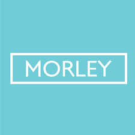
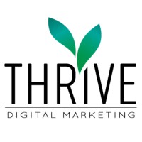

This past summer, I worked as an intern for a women's fashion company that has 5 locations nationwide. I helped edit images, update the Shopify platform, and design website pages. I was able to learn a lot about the world of retail while pursuing my career in digital marketing and graphic design. I was able to use Photoshop to create graphics for the brand, as well as collaborate with the marketing team to promote our brand on social media!

During my senior year of high school, I worked as an intern for a local digital marketing company. I gained first-hand professional knowledge of the online advertising industry on several different platforms. I learned how to run ads on Facebook, Instagram, and Google to help various companies boost their sales. This was my first intership or job in the field of marketing, and it taught me that marketing was what I wanted to pursue.

To learn more about my work experience and involvement, click below to visit my personal LinkedIn page!
My LinkedIn